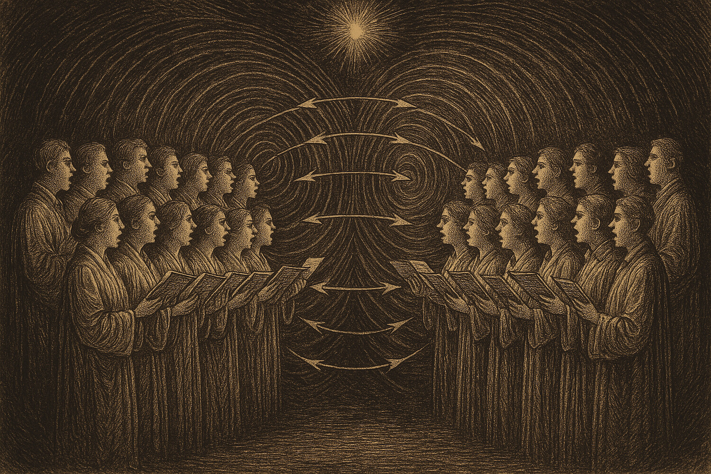

Duellum Veritatis · nightly duel
A nocturnal duel · science explainer
When two crowds clap in the same rhythm — are they hearing each other, or just both catching the same signal from outside? And can the two cases even be told apart by watching alone?

Статус: публичный состязательный AI stress-test. Это не peer review, не научное доказательство и не подтверждение тезиса. Две AI-стороны спорили о заранее зафиксированном утверждении по фиксированному протоколу; независимый AI-арбитр вынес структурный вердикт. Для числовых утверждений опубликованные числа происходят только из приложенного воспроизводимого compute bundle. Публикация означает, что выпуск прошёл release gate; она не повышает статус утверждения до открытия.
Status: public adversarial AI stress-test. This is not peer review, not a scientific proof, and not an endorsement of the claim. Two AI-generated sides argued a frozen claim under a fixed protocol; an independent AI arbiter issued a structured verdict. For numerical claims, the reported numbers come only from the attached reproducible compute bundle. Publication means the duel passed the release gate; it does not promote the claim to discovery status.
Retrospective note. Early release, published before the series adopted its current honest-disclosure format. This metadata/disclaimer is added retroactively rather than rewriting the original text. Order-swap arbitration audit: NOT_RUN (waiver: retrospective_release_before_D1b). Protocol status: PARTIAL.
Эпистемический статус (2026-06-13): scout — разведывательная состязательная проба, не научный результат. К этому раннему выпуску не приложен compute bundle и не проводился независимый арбитраж (order-swap audit: NOT_RUN; протокол: PARTIAL); тема лежит на известном поле. Читать как аргумент, а не как находку.
Epistemic status (2026-06-13): scout — an exploratory adversarial probe, not a scientific result. This early issue carries no attached compute bundle and had no independent arbitration (order-swap audit: NOT_RUN; protocol: PARTIAL); the topic is well-trodden ground. Read it as argument, not as a finding.
Picture two choirs singing in adjacent halls. At first each holds its own part, but a minute later you notice: they are singing in time. Their voices have synchronized. Then comes a deceptively simple question. There are two reasons this could have happened:
From the outside both pictures look identical: two synchronized choirs. The question of the duel — can you tell, from a recording of their singing alone, with no intervention, which of the two causes is the true one? Or must you intervene — say, switch off the metronome and see whether the synchrony falls apart?
What this is really about. Physicists model such choirs as oscillators — objects each carrying a phase (where it currently sits in its cycle: inhale–exhale, step–step, beat). The classic equation for a large group of interacting oscillators is the Kuramoto model. A "choir" here is a group of such oscillators, and its collective rhythm is captured by a single number — the order parameter.Two step onto the stage. Athos defends a bold thesis; Aramis sets out to topple it. The thesis runs:
"Version A and version B are observationally equivalent. No passive statistic computed from recordings of the rhythms will tell a shared signal from mutual coupling. To separate them, you need an intervention."Two key terms. A passive statistic is any quantity you can compute just by looking at a recording, touching nothing (how alike the rhythms are, whether one lags the other, and so on). Observational equivalence is when two different causes yield indistinguishable observations: the data are the same, the mechanism behind them differs. If that holds, a passive observer is powerless — an intervention is needed, an active interference with the system.
Athos (for the thesis) bets on symmetry: if both choirs are equal partners, neither leading the other, then the most obvious "clues" — who runs ahead of whom, which way the influence flows — cancel out for both versions at once. And if so, there is nothing left to tell them apart.
Aramis (on the attack) replies: "It isn't the pair of choirs that's blind — only your particular clue is. There is another, subtler one, and it does tell them apart."
What set this duel apart: every blow was backed not by words but by a computation. The duelists took turns running an honest simulation of the two choirs and measuring their clues on it. And the opening thrusts exposed a trap that is easy to fall into.
For the comparison to be fair, both choirs must be synchronized equally strongly. The strength of synchrony is measured by a number from 0 to 1 — this is the order parameter between the choirs.
The synchrony measure (PLV). If two rhythms keep the same phase difference throughout, this value is close to 1 (rigid synchrony). If the phase difference wanders at random, it is close to 0. Formally this is the phase-locking value. Mechanisms can only be compared at equal PLV — otherwise you are not comparing "shared signal versus coupling" but "weak synchrony versus strong."This is exactly where both repeatedly stumbled: in the simple model, mutual coupling drives synchrony almost instantly to the ceiling (PLV ≈ 1), whereas a shared signal holds it at an intermediate level. Equalizing the PLV of the two mechanisms never quite worked — and that in itself is a substantive fact, one the defender kept pointing to. So the decisive move had to find a difference that did not rely on the strength of synchrony.
Aramis measured not the rhythm itself but its instantaneous speed — how sharply each choir speeds up and slows down from moment to moment — and asked: do these jolts coincide in the two choirs at the very same instant?
Where the difference comes from — the physical core. A shared signal strikes both choirs at once: the same metronome push accelerates both together. So their instantaneous jolts coincide with no delay. Under mutual coupling, by contrast, the choirs merely tune their overall rhythm to each other, while each keeps its own moment-to-moment jitter — the small jolts of one are not passed to the other instantly.And here is what makes the result especially convincing. In this run, coupling (B) is phase-synchronized even more strongly than the shared signal (PLV ≈ 0.97 against ≈ 0.72) — and yet its instantaneous jolts do not coincide at all. While the more weakly synchronized shared signal gives an almost perfect instantaneous match of jolts. So it is not the strength of synchrony that matters: the jolts reveal the mechanism itself, regardless of which choir is more tightly "locked."
The picture leaves no room for argument in this particular round: a simple automatic classifier given only the coarse synchrony measure confused the versions (accuracy ≈ 0.73 — barely better than a coin flip). The same classifier, handed the subtle clue about instantaneous jolts and their lag, separated the versions flawlessly.
Aramis wins — the one attacking the thesis. On the quality of argument and on the decisive numerical result, he is closer to the truth: the universal claim that "nothing can tell them apart" proved too strong.
But a qualified win. Aramis himself at times compared choirs in different synchrony regimes, and his early clues were an artifact of that skew. The purely phase-based "directional" clues the defender bet on truly are blind — here Athos is right. The versions could be separated only by the finer statistic of instantaneous jolts.
The losing thesis kept an honest line of defense, and the duel laid it bare. The whole result rests on the "shared signal" being simple: the same instantaneous push to both choirs. Allow it to be richer — delayed, with its own structure, affecting the loudness of the singing too — and it begins to reproduce the very clues used to convict it. Then the boundary between "shared signal" and "mutual coupling" blurs again.
So the precise statement of the conclusion is this: within two simple, honestly posed versions, a passive fingerprint does exist — the instantaneous jolts reveal the mechanism. But the wider the class of admissible shared signals, the closer we come to the original thesis of indistinguishability. Exactly where the boundary lies is an open question — and a more interesting one than the duel's outcome.
Why this matters beyond the hall of choirs. The same question arises wherever two systems "move in step": brain regions, market prices, populations, power grids. Seeing coordination, we want to know — do they influence each other, or are they simply driven by a shared invisible factor? An important caveat: the model examined here is two specific idealized versions, and no general law about all systems follows from it. But it poses the question cleanly: for each pair of "shared factor versus mutual influence," it is worth checking separately whether the mechanism leaves a passive fingerprint — or whether it can be distinguished only by intervention. Here a fingerprint was found for a simple shared factor; how far it survives added complexity is the matter for the next duel.
Model. Two groups of 120 phase oscillators each (Kuramoto model) with intra-group coupling; natural frequencies ~ normal (mean 1.0, spread 0.08), integration step dt = 0.05, series length 5000 steps (the first 1500 discarded as burn-in).
Version A (common noise). The same random push is applied to both groups simultaneously (intensity 0.3) plus independent intra-group noise (0.6); no inter-group coupling.
Version B (mutual coupling). Weak symmetric coupling between the groups (strength 0.02), no common noise; the same intra-group noise (0.6).
Operating point and averaging. Both versions are in a strong-synchrony regime (PLV: A ≈ 0.72, B ≈ 0.97; perfect equality cannot be reached — see "the false-comparison trap"). The jolt-coincidence curve is averaged over 8 independent runs (random seeds 0–7).
Recognition (lower chart). Accuracy obtained on the final move of the duel: a logistic classifier, leave-one-out validation, ~30 runs per version; the random-guess baseline is 0.5.
The numbers are illustrative: they reproduce the duel's key result and do not claim to be a full paper. Full reproducibility requires the simulation source code.